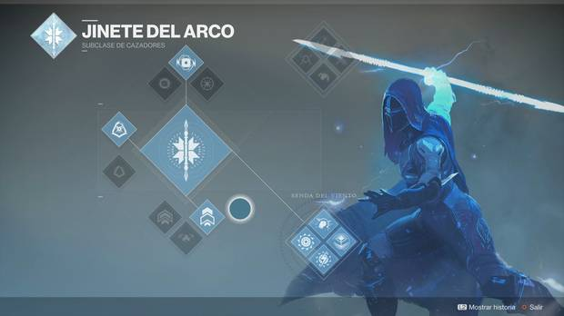
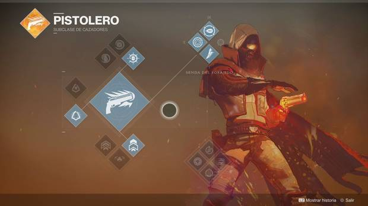
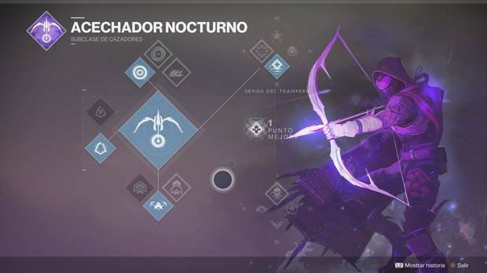
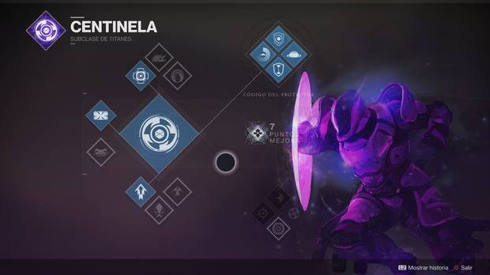
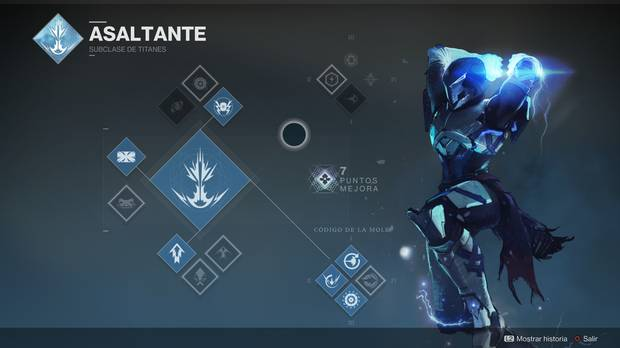
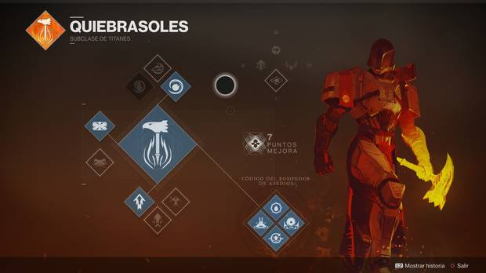
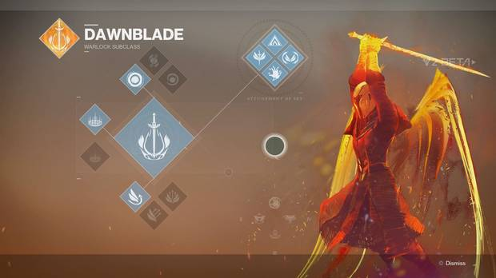
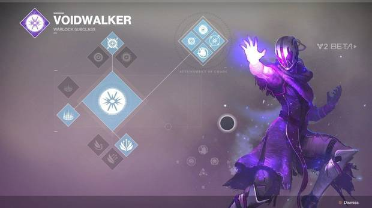
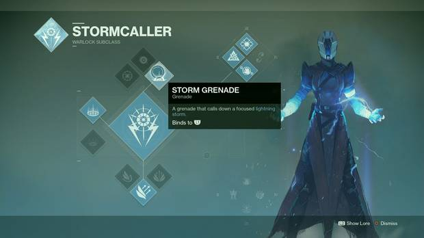

Los cazadores, rápidos con el gatillo y letales con la espada, acechan en los campos de batalla. Son astutos e implacables, y corren grandes riesgos a cambio de enormes recompensas. Son personajes con grandes habilidades para esquivar y moverse rápidamente por los escenarios, que pueden utilizar doble o triple salto. Su arma cuerpo a cuerpo es un cuchillo, y tienen un blindaje medio.
| Subclase | Imagen |
| Jinete del arco |  |
| Pistolero |  |
| Acechador Nocturno |  |
Los titanes son pilares de fuerza que nadie puede mover. Protegen a sus aliados y combaten en primera línea hasta acabar con todos los enemigos. Es el tipo de personaje más adecuado para los jugadores más osados y ofensivos, que quieren llevar la iniciativa en los combates. Cuentan con el blindaje más resistente, y cuentan con un cuerpo a cuerpo muy potente.
| Subclase | Imagen
| Centinela |
 |
Asalante |
 |
Quiebrasoles |
 |
|
Los hechiceros son estudiosos de la Luz, y albergan un arsenal de secretos letales. En el campo de batalla, esos secretos pueden hacer tambalear hasta la propia realidad. Es un personaje adecuado para los jugadores más estratégicos, que quieran jugar con cabeza y usar sus peculiares habilidades en el momento justo. Tienen el blindaje más ligero, y un deslizamiento flotante que les permiten permanecer en el aire más tiempo que a las otras clases, también pueden llegar a convertirse en la clase de curación o healer en Destiny 2
| Subclase | Imagen
| Empunasoles |
 |
Caminante del vacio |
 |
Invocatormentas |
 |
|
Quieres volver a la pagina principal ?